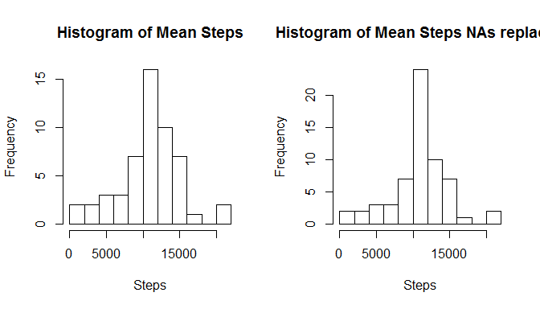

Reproducible Research: Peer Assessment 1
Loading and preprocessing the data
data<-read.csv("activity.csv")
ag1<-aggregate(steps ~ date,data,sum)
num_nas<-length(which(is.na(data$steps)))What is mean total number of steps taken per day?
Histogramm showing the total number of Steps taken each day:
hist(ag1$steps,breaks="FD",main="Histogram of Mean Steps", xlab="Steps")
The mean of the total number of steps taken per day is:
mean(ag1$steps)## [1] 10766.19The median of the total number of steps taken per day is:
median(ag1$steps)## [1] 10765What is the average daily activity pattern?
#group by interval, order by steps, take the first elem which is maximum
ag2<-aggregate(steps ~ interval,data,mean)
ag3<-ag2[order(-ag2$steps),]
maxinterval<-ag3[1,1]
names(ag3)[2]<-"av"
plot(ag2$interval,ag2$steps,type="l",xlab="5 min Interval",ylab="average steps")
The interval 835 contains the max number of steps.
Imputing missing values
# use the average over all steps per interval to replace NAs in the original data
# merge original data with the average per interval data and add a column which replaces NA values
data2<-merge(data,ag3)
data2$stepsn<-data2$steps
for (i in 1:length(data2$steps)){if(is.na(data2$steps[i])) { data2$stepsn[i]<-data2$av[i]}}
data3<-data2[order(data2$date,data2$interval),]
ag1n<-aggregate(stepsn ~ date,data3,sum)
ag2n<-aggregate(stepsn ~ interval,data3,mean)The number of NAs in the data set is 2304.
What is mean total number of steps taken per day?
The mean of total number of steps taken per day is:
mean(ag1n$stepsn)## [1] 10766.19The median of total number of steps taken per day is:
median(ag1n$stepsn)## [1] 10766.19The difference of the mean and medians is:
mean(ag1n$stepsn)-mean(ag1$steps)## [1] 0median(ag1n$stepsn)-median(ag1$steps)## [1] 1.188679This shows the difference in the original and the new data (NAs replaced):
par(mfcol = c(1, 2))
hist(ag1$steps,breaks="FD",main="Histogram of Mean Steps", xlab="Steps")
hist(ag1n$stepsn,breaks="FD",main="Histogram of Mean Steps NAs replaced", xlab="Steps")
Are there differences in activity patterns between weekdays and weekends?
library(timeDate)
library(ggplot2)
d<-as.Date(data3$date,"%Y-%m-%d")
data3$wday<-as.factor(ifelse(isWeekday(d),"weekday","weekend"))
ag4<-aggregate(stepsn ~ interval+wday,data3,mean)
g <- ggplot(ag4, aes(interval, stepsn))
g+geom_line(colour="blue")+ facet_grid(wday ~ .)+xlab("Interval")+ylab("Number of Steps")